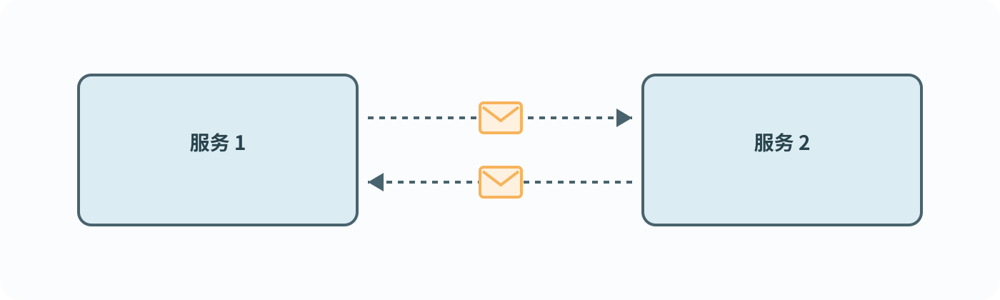
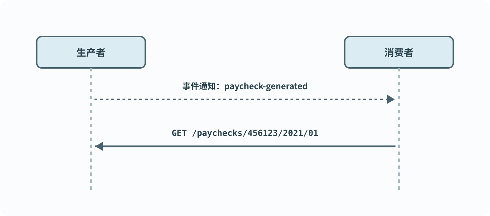
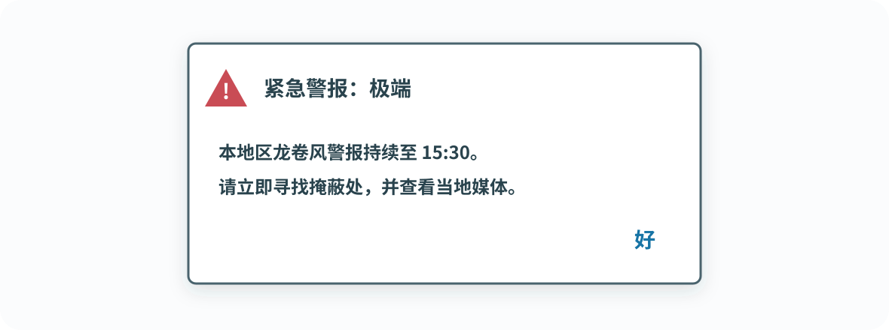
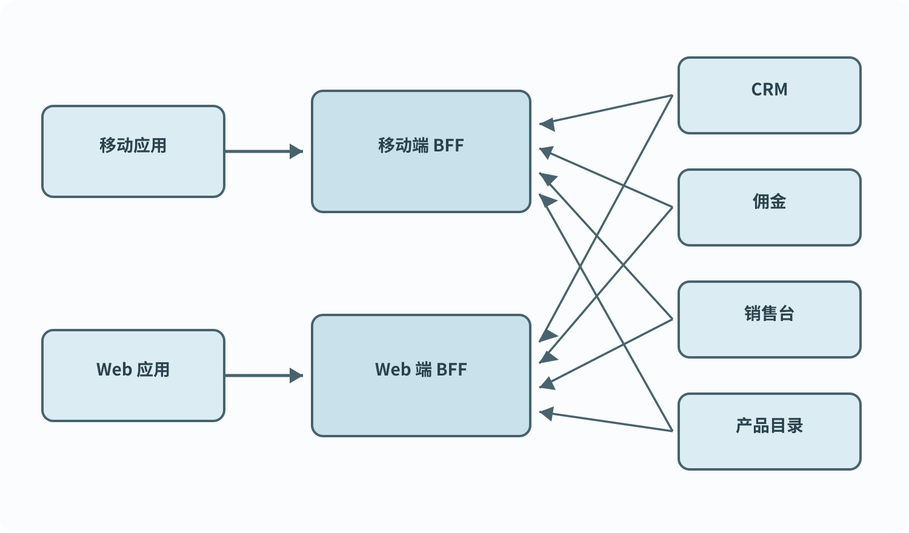
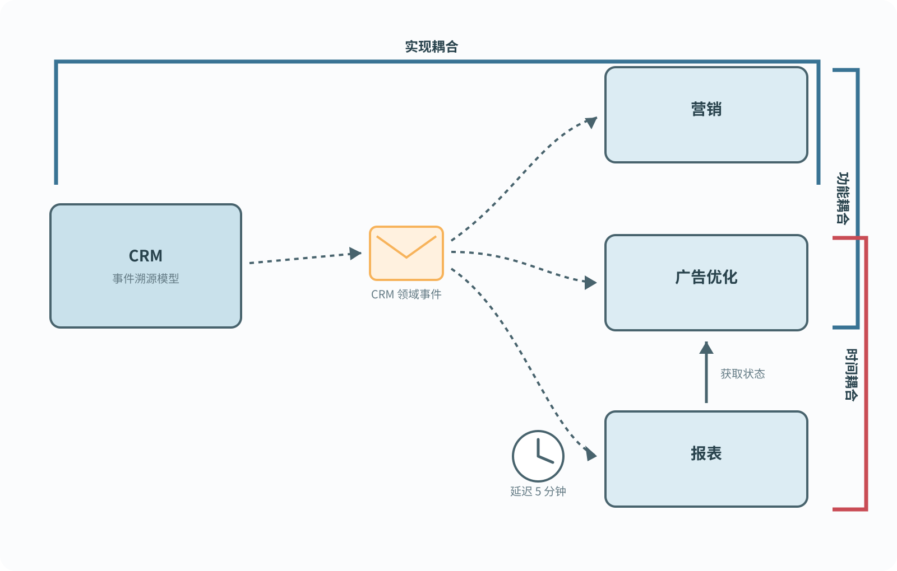
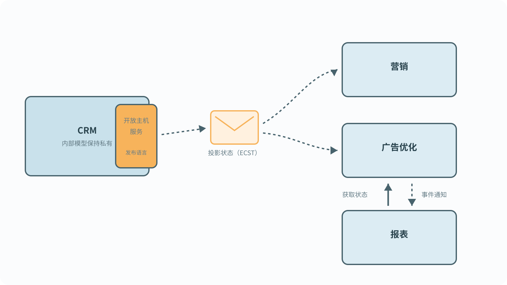

事件驱动架构
和微服务一样，事件驱动架构（event-driven architecture，EDA）在现代分布式系统中无处不在。许多人建议，在设计松耦合、可扩展、容错的分布式系统时，默认使用事件驱动通信作为集成机制。
事件驱动架构经常与领域驱动设计联系在一起。毕竟，EDA 建立在事件之上，而事件在 DDD 中也很突出——我们有领域事件；必要时，甚至会把事件作为系统的事实来源。于是，人们很容易想到：能不能直接利用 DDD 中的事件来构建事件驱动架构？但这真的是个好主意吗？
事件并不是一种神秘酱汁，不能往遗留系统上一浇，就把它变成松耦合的分布式系统。恰恰相反：不加思考地使用 EDA，会把一个模块化单体变成分布式的大泥球。
本章将探讨 EDA 与 DDD 之间的关系。你将学习事件驱动架构的基本构件、EDA 项目失败的常见原因，以及如何运用 DDD 的工具设计有效的异步集成系统。
事件驱动架构
简单来说，事件驱动架构是一种架构风格：系统组件通过交换事件消息，以异步方式相互通信，如图 15-1 所示。组件不再同步调用服务端点，而是发布事件，把系统领域中发生的变化通知给其他系统元素。其他组件可以订阅系统中产生的事件，并据此作出反应。第 9 章介绍的 Saga 模式，就是事件驱动执行流程的典型例子。

这里必须强调事件驱动架构与事件溯源之间的区别。正如第 7 章所讨论的，事件溯源是一种把状态变化记录为一系列事件的方法。
虽然事件驱动架构和事件溯源都以事件为基础，但二者在概念上不同。EDA 关注的是服务之间的通信，而事件溯源发生在服务内部。为事件溯源设计的事件表示服务内部实现的状态转换——也就是事件溯源领域模型中聚合的状态转换。它们的目标是捕获业务领域的细微之处，而不是把这个服务与其他系统组件集成起来。
本章后面会看到，事件有三种类型，其中一些比另一些更适合集成。
事件
在 EDA 系统中，事件交换是集成各个组件、使它们形成一个系统的关键通信机制。下面更仔细地看一看事件，并了解它们与消息有什么不同。
事件、命令与消息
到目前为止，事件的定义看起来与消息模式的定义相似。1 但二者并不相同。事件是一种消息，但消息不一定是事件。消息有两种类型：
事件（Event）：描述已经发生的变化的消息。
命令（Command）：描述必须执行的操作的消息。
事件是已经发生的事，而命令是要求做某件事的指令。事件和命令都可以作为消息异步传递。不过，命令可能被拒绝：例如，命令无效或违背系统业务规则时，命令目标可以拒绝执行。事件的接收者则不能取消事件，因为事件描述的事情已经发生。要抵消事件，只能发起一个补偿操作——也就是一条命令，正如 Saga 模式所做的那样。
由于事件描述的是已经发生的事情，所以事件名称应使用过去时，例如 DeliveryScheduled（配送已安排）、ShipmentCompleted（发货已完成）或 DeliveryConfirmed（配送已确认）。
结构
事件是一条可以序列化，并通过所选消息平台传输的数据记录。典型事件模式包含事件元数据和有效载荷——也就是事件实际传递的信息：
{
"type": "delivery-confirmed",
"event-id": "14101928-4d79-4da6-9486-dbc4837bc612",
"correlation-id": "08011958-6066-4815-8dbe-dee6d9e5ebac",
"delivery-id": "05011927-a328-4860-a106-737b2929db4e",
"timestamp": 1615718833,
"payload": {
"confirmed-by": "17bc9223-bdd6-4382-954d-f1410fd286bd",
"delivery-time": 1615701406
}
}事件的有效载荷不仅描述事件传递的信息，也定义了事件的类型。接下来详细讨论三类事件以及它们之间的差异。
事件的类型
事件可以归入三类之一：2事件通知、事件携带状态转移或领域事件。
事件通知
只提醒“有事发生”，详情回源查询。
事件携带状态转移
把状态副本送过去，供消费者本地保存。
领域事件
表达业务世界里究竟发生了什么。
事件通知
事件通知是一条关于业务领域变化的消息，其他组件会对这一变化作出反应，例如 PaycheckGenerated（工资单已生成）、CampaignPublished（营销活动已发布）等。
事件通知不应该很冗长：它的目标是把事件告知感兴趣的各方，但通知本身不应携带订阅者处理事件所需的全部信息。例如：
{
"type": "paycheck-generated",
"event-id": "537ec7c2-d1a1-2005-8654-96aee1116b72",
"delivery-id": "05011927-a328-4860-a106-737b2929db4e",
"timestamp": 1615726445,
"payload": {
"employee-id": "456123",
"link": "/paychecks/456123/2021/01"
}
}上面的事件只通知外部组件：一张工资单已经生成。它没有携带工资单的全部相关信息；接收方可以使用链接获取更详细的信息。图 15-2 展示了这个通知流程。

从某种意义上说，通过事件通知消息集成，类似于美国的无线紧急警报系统（WEA）和欧洲的 EU-Alert，如图 15-3 所示。这些系统使用移动通信基站广播短消息，向公民通知公共卫生问题、安全威胁和其他紧急事件。系统发送的消息最长只能有 360 个字符。这条短消息足以提醒你发生了紧急情况，但你必须主动使用其他信息来源获得更多细节。

在多种场景下，简短的事件通知更合适。下面具体看看其中两个：安全性和并发性。
安全性
要求接收方显式查询详细信息，可以避免在消息基础设施上传播敏感信息，并要求订阅者额外通过授权才能访问数据。
并发性
由于事件驱动集成具有异步性质，信息到达订阅者时可能已经过时。如果这种信息容易受竞态条件影响，显式查询就能获得最新状态。
此外，如果存在并发消费者，并且一条事件只能由一个订阅者处理，那么查询过程可以与悲观锁结合。这样生产者一侧就能保证，不会有其他消费者同时处理这条消息。
事件携带状态转移
事件携带状态转移（event-carried state transfer，ECST）消息会把生产者内部状态的变化通知给订阅者。与事件通知不同，ECST 消息包含能够完整反映状态变化的所有数据。
ECST 消息可以有两种形式。第一种是被修改实体状态的完整快照：
{
"type": "customer-updated",
"event-id": "6b7ce6c6-8587-4e4f-924a-cec028000ce6",
"customer-id": "01b18d56-b79a-4873-ac99-3d9f767dbe61",
"timestamp": 1615728520,
"payload": {
"first-name": "Carolyn",
"last-name": "Hayes",
"phone": "555-1022",
"status": "follow-up-set",
"follow-up-date": "2021/05/08",
"birthday": "1982/04/05",
"version": 7
}
}上面的 ECST 消息包含客户更新后状态的完整快照。当数据结构很大时，也可以只在 ECST 消息中包含实际修改的字段：
{
"type": "customer-updated",
"event-id": "6b7ce6c6-8587-4e4f-924a-cec028000ce6",
"customer-id": "01b18d56-b79a-4873-ac99-3d9f767dbe61",
"timestamp": 1615728520,
"payload": {
"status": "follow-up-set",
"follow-up-date": "2021/05/10",
"version": 8
}
}无论 ECST 消息包含完整快照还是仅包含更新字段，由这类事件组成的事件流，都允许消费者在本地保存实体状态的缓存并直接使用。概念上，事件携带状态转移是一种异步数据复制机制。这种方式能提高系统容错性：即使生产者不可用，消费者也可以继续工作。对于需要处理多个数据源的组件，它还能提升性能；组件不必每次需要数据时都查询源系统，而可以把全部数据缓存在本地，如图 15-4 所示。

领域事件
第三类事件消息，是第 6 章介绍过的领域事件。在某种意义上，领域事件位于事件通知和 ECST 消息之间：它们都描述业务领域中的重要事件，也都包含描述该事件的全部数据。尽管有这些相似之处，三者在概念上仍然不同。
领域事件与事件通知
领域事件和事件通知都会描述生产者业务领域中的变化。不过，它们有两个概念上的差异。
第一，领域事件包含描述该事件的全部信息，消费者不需要再执行其他操作来获得完整情况。
第二，建模意图不同。事件通知的设计目标是降低与其他组件集成的难度；领域事件则用来建模和描述业务领域。即使没有外部消费者对它们感兴趣，领域事件仍然可能有价值。对于事件溯源系统尤其如此，因为领域事件要用来建模所有可能的状态转换。如果外部消费者对所有可用领域事件都感兴趣，设计反而会变差。本章稍后会更详细地讨论这个问题。
领域事件与事件携带状态转移
领域事件中包含的数据，与典型 ECST 消息的模式在概念上不同。
ECST 消息会提供足够的信息，使消费者能维护生产者数据的本地缓存。单独一个领域事件不应该暴露如此丰富的模型。即使某个领域事件中包含了一些数据，它通常也不足以缓存聚合状态，因为消费者没有订阅的其他领域事件也可能影响相同字段。
此外，与事件通知相同，这两类消息的建模意图也不同。领域事件中的数据不是为了描述聚合状态，而是为了描述聚合生命周期中发生的一个业务事件。
事件类型：示例
下面用三种方式表示“结婚”这件事，展示三类事件之间的差异：
eventNotification = {
"type": "marriage-recorded",
"person-id": "01b9a761",
"payload": {
"person-id": "126a7b61",
"details": "/01b9a761/marriage-data"
}
};
ecst = {
"type": "personal-details-changed",
"person-id": "01b9a761",
"payload": { "new-last-name": "Williams" }
};
domainEvent = {
"type": "married",
"person-id": "01b9a761",
"payload": {
"person-id": "126a7b61",
"assumed-partner-last-name": true
}
};marriage-recorded 是事件通知消息。它只表达指定 ID 的人已经结婚，除此之外没有更多信息。它只包含事件的最少信息；对更多细节感兴趣的消费者必须访问 details 字段中的链接。
personal-details-changed 是事件携带状态转移消息。它描述个人资料发生的变化，也就是姓氏改变了。消息没有解释姓氏为什么改变：这个人是结婚了，还是离婚了？
最后，married 是领域事件。它的建模尽量贴近业务领域中这件事的本质，包含当事人的 ID，以及当事人是否使用了伴侣姓氏的标记。
设计事件驱动集成
正如第 3 章所讨论的，软件设计主要是关于边界的设计。边界定义什么属于内部、什么留在外部，以及最重要的——什么东西要穿过边界，也就是组件之间怎样集成。在基于 EDA 的系统中，事件是一等设计元素：它既影响组件怎样集成，也会影响组件边界本身。选择正确的事件消息类型，决定了一个分布式系统会被解耦，还是会被绑死。
本节将介绍应用不同事件类型的启发式方法。不过先来看看，怎样用事件设计出一个强耦合的分布式大泥球。
分布式大泥球
考虑图 15-5 所示的系统。
CRM 限界上下文使用事件溯源领域模型实现。当 CRM 系统需要与“营销”限界上下文集成时，团队决定利用事件溯源数据模型的灵活性，让消费者——也就是营销系统——订阅 CRM 的领域事件，再投影出符合自己需求的模型。
后来引入“广告优化”限界上下文，它同样需要处理 CRM 产生的信息。团队又一次让广告优化订阅 CRM 产生的全部领域事件，并投影出适合广告优化需求的模型。

有意思的是，营销和广告优化两个限界上下文都需要用相同格式呈现客户信息，因此它们最终都从 CRM 领域事件投影出了同一个模型：每个客户状态的扁平化快照。
报表限界上下文只订阅 CRM 发布的一部分领域事件，并把它们当作事件通知，用来获取广告优化上下文计算出的结果。然而，广告优化和报表都由相同事件触发。为了确保报表模型更新时，广告优化已经算完，报表上下文人为加入了延迟：收到消息五分钟后才开始处理。
这个设计糟透了。下面分析系统中存在的几种耦合。
时间耦合
广告优化和报表限界上下文在时间上发生了耦合：它们依赖严格的执行顺序。广告优化组件必须先完成处理，之后才能触发报表模块。如果顺序颠倒，报表系统就会产生不一致的数据。
为了强制保证执行顺序，工程师在报表系统中引入处理延迟。五分钟的延迟让广告优化组件“有时间”完成计算。但显然，这并不能防止执行顺序出错：
- 广告优化可能过载，无法在五分钟内完成处理。
- 网络问题可能延迟消息送达广告优化服务。
- 广告优化组件可能发生故障，停止处理传入消息。
功能耦合
营销和广告优化限界上下文都订阅 CRM 的领域事件，最后实现了同一个客户数据投影。换句话说，把传入领域事件转换成基于状态的表示这套业务逻辑，在两个限界上下文中被重复实现，而且它们有相同的变化原因：二者都必须以相同格式呈现客户数据。因此，只要一个组件中的投影发生变化，同样的修改就必须复制到另一个限界上下文。
这就是功能耦合：多个组件实现相同的业务功能；一旦功能变化，所有组件都必须同时改变。
实现耦合
这种耦合更隐蔽。营销和广告优化限界上下文订阅了 CRM 事件溯源模型产生的全部领域事件。因此，CRM 的实现发生变化——例如增加一个新领域事件，或修改现有事件的模式——两个订阅方都必须跟着修改！如果没有同步修改，就会产生不一致的数据。例如，事件模式改变会使订阅方的投影逻辑失败；而如果 CRM 模型加入一个新的领域事件，它可能影响投影模型，忽略它同样会投影出不一致的状态。
重构事件驱动集成
如你所见，盲目地向系统中倾倒事件，并不会让系统变得解耦或更有韧性。你可能以为这个例子不够现实，但遗憾的是，它来自一个真实案例。下面看看怎样调整事件，从而显著改善设计。
把构成 CRM 数据模型的全部领域事件暴露出去，会让订阅者与生产者的实现细节耦合。要处理实现耦合，可以只暴露一组严格受限的事件，或者改用另一类事件。
营销和广告优化两个订阅者因为实现了相同业务功能，也彼此形成了功能耦合。
实现耦合和功能耦合可以一起解决：把投影逻辑封装回生产者——CRM 限界上下文。CRM 不再暴露实现细节，而是遵循消费者驱动契约模式：投影出消费者需要的模型，并把它纳入限界上下文的发布语言。这是一个专门用于集成的模型，与内部实现模型解耦。结果是，消费者能得到全部所需数据，却不必知道 CRM 的实现模型。
为了处理广告优化和报表之间的时间耦合，广告优化组件可以发布一条事件通知，触发报表组件去获取自己需要的数据。重构后的系统如图 15-6 所示。

事件驱动设计启发式
让事件类型与手头任务匹配，能让最终设计的耦合度低一个数量级，同时更灵活、更容错。下面总结前述改动背后的设计启发式。
假设最坏情况一定会发生
正如安迪·格鲁夫所说，只有偏执狂才能生存。3设计事件驱动系统时，应把它当作指导原则：
- 网络一定会变慢。
- 服务器会在最不方便的时刻失败。
- 事件会乱序到达。
- 事件会被重复投递。
最重要的是，这些问题最常在周末和公共假期出现。
事件驱动架构中的“驱动”意味着，整个系统依赖消息成功送达。因此，要像躲避瘟疫一样避开“应该不会有事”的心态。无论发生什么，都要保证事件始终得到一致、可靠的交付：
- 使用发件箱（outbox）模式可靠地发布消息。
- 发布消息时，要确保订阅者能够去重，并识别和重新排列乱序消息。
- 编排跨限界上下文、需要补偿动作的流程时，使用 Saga 和流程管理器模式。
区分公共事件和私有事件
发布领域事件时要警惕暴露实现细节，尤其是事件溯源聚合中的领域事件。要把事件视为限界上下文公共接口的固有组成部分。因此，实现开放主机服务模式时，应确保事件体现在限界上下文的发布语言中。第 9 章讨论了转换基于事件模型的模式。
设计限界上下文的公共接口时，要充分利用不同事件类型。事件携带状态转移消息能把实现模型压缩成更紧凑的模型，只传递消费者真正需要的信息。
事件通知还能进一步缩小公共接口。最后，使用领域事件与外部限界上下文通信时要克制；可以考虑专门设计一组公共领域事件。
评估一致性要求
设计事件驱动通信时，还要评估限界上下文的一致性要求，把它作为选择事件类型的另一个启发式：
- 如果组件可以接受最终一致的数据，使用事件携带状态转移消息。
- 如果消费者需要读到生产者最后一次写入后的状态，就发布事件通知，随后通过查询获取生产者的最新状态。
结论
本章把事件驱动架构视为设计限界上下文公共接口时不可分割的一部分。你学习了三类可用于跨限界上下文通信的事件：
事件通知：通知消费者发生了一件重要的事，但消费者必须显式查询生产者，才能获得更多信息。
事件携带状态转移：一种基于消息的数据复制机制。每个事件包含一份状态快照，可以用来维护生产者数据的本地缓存。
领域事件：描述生产者业务领域中发生的事件的消息。
使用不合适的事件类型会使基于 EDA 的系统偏离正轨，并在不知不觉中变成大泥球。为集成选择正确事件类型时，要评估限界上下文的一致性要求，并警惕暴露实现细节。应显式设计公共事件和私有事件。最后，要确保即使面对技术故障和系统宕机，系统仍能交付消息。
不看上文，试着回答四个问题
1. 为什么 CRM 的内部领域事件不该直接成为所有消费者的公共协议？
因为消费者会依赖 CRM 的实现模型；新增事件或修改模式时，所有投影都可能同时变化，形成实现耦合。
2. ECST 和领域事件最容易混淆在哪里？
二者都可能携带数据，但 ECST 的目标是让消费者重建或缓存状态；领域事件的目标是准确表达业务上发生了什么。
3. 为什么“延迟五分钟再处理”不是顺序保证？
负载、网络和宕机都可能让上游超过五分钟。真正知道“已经算完”的只有广告优化自己，所以它应该在完成时明确发布通知。
4. 用一句话复述本章主旨
事件不是天然解耦的；要把内部事件和公共事件分开，并根据集成意图与一致性要求，选择通知、状态转移或领域事件。
练习
- 下列哪些说法是正确的？
- 事件驱动架构定义了那些要跨越组件边界传播的事件。
- 事件溯源定义了那些应留在限界上下文边界内部的事件。
- 事件驱动架构和事件溯源只是同一模式的不同叫法。
- A 和 B 正确。
- 哪一类事件最适合传递状态变化？
- 事件通知。
- 事件携带状态转移。
- 领域事件。
- 所有事件类型在传递状态变化方面同样合适。
- 哪一种限界上下文集成模式要求显式定义公共事件？
- 开放主机服务。
- 防腐层。
- 共享内核。
- 遵奉者。
- 服务 S1 和 S2 以异步方式集成。S1 必须传递数据，而 S2 需要能够读取 S1 最后写入的数据。哪一种事件适合这个集成场景？
- S2 应发布事件携带状态转移事件。
- S2 应发布公共事件通知，让 S1 发起同步请求，以获取最新信息。
- S2 应发布领域事件。
- A 和 B。
脚注
- Gregor Hohpe、Bobby Woolf，《企业集成模式：设计、构建及部署消息传递解决方案》，Addison-Wesley，2003。
- Martin Fowler，“What do you mean by ‘Event-Driven’?”，检索于 2021 年 8 月 12 日。
- Andrew S. Grove，《只有偏执狂才能生存》，HarperCollins Business，1998。
正文、代码、图号、脚注与练习均按原书第 15 章保留；紫色学习讲解和学懂检测为辅助理解内容，不属于原文。